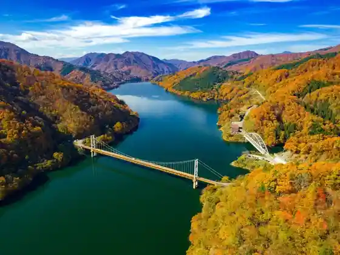
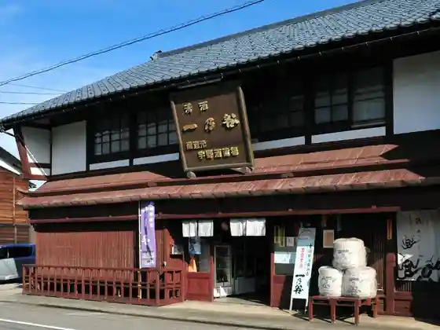
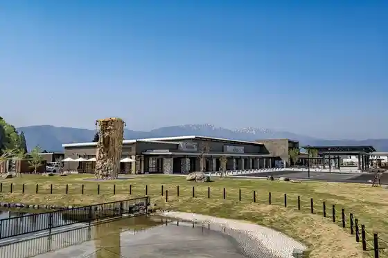
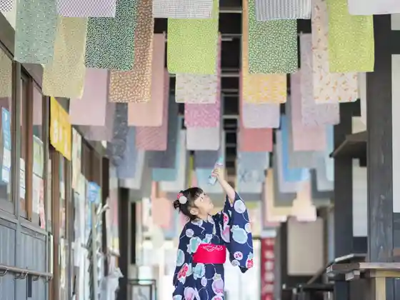

Echizen Onoshi Shiro
Onoshi, Fukui · 0779-66-1111 · Official / source link
Kuzuryuko
Onoshi, Fukui · 0779-66-1111 · Official / source link

Seishu Ichi no Tani Uno Shuzo Ba
Onoshi, Fukui · 0779-66-2236 · Official / source link

Roadside Station (Echizen O no Ko Shima no Sato)
Onoshi, Fukui · 0779-64-4500 · Official / source link

Ketsu Rakuza Tenugui Kairo
Onoshi, Fukui · 0779-65-5521 · Official / source link

Roku Ro Shi Highlands
Onoshi, Fukui · 0779-65-5521 · Official / source link
Karikomi Ike
Onoshi, Fukui · 0779-66-1111 · Official / source link
Onoshi Kaseki Hakkutsu Taiken Center (HOROSSA!)
Onoshi, Fukui · 0779-78-2070 · Official / source link
Buke Yashiki Kyu Ta Village Ie
Onoshi, Fukui · 0779-65-6212 · Official / source link
Katsuhara Enchi
Onoshi, Fukui · 0779-66-1111 · Official / source link
Kurotani no Bosetsu Kabe
Onoshi, Fukui · Official / source link
Yume no Kakehashi
Onoshi, Fukui · Official / source link
Roku Ro Shi Kogen Campground (SORA to DAICHI)
Onoshi, Fukui · 0779-69-2787 · Official / source link
Kuzuryu Kyo
Onoshi, Fukui · Official / source link
O Shimizu
Onoshi, Fukui · 0779-66-1111 · Official / source link
Hokyo Tera
Onoshi, Fukui · 0779-65-8833 · Official / source link
Otokyanpazu Kuzuryu
Onoshi, Fukui · 0779-78-2345 · Official / source link
Hotoke Omae Falls
Onoshi, Fukui · 0779-66-1111 · Official / source link
Buke Yashiki Kyu Uchiyama Ie
Onoshi, Fukui · 0779-65-6122 · Official / source link
Tera Town Tori (Onoshi)
Onoshi, Fukui · 0779-65-5521 · Official / source link
Hongan Shimizu Itoyo Village
Onoshi, Fukui · 0779-65-5104 · Official / source link
Echizen O no Meisui Meguri (Mitasu (Me+asu))
Onoshi, Fukui · 0779-65-5521 · Official / source link
Roadside Station Kuzuryu Izumi Fureai Hall
Onoshi, Fukui · 0779-78-2300 · Official / source link
Hana no Jutan
Onoshi, Fukui · 0779-66-3756 · Official / source link
Nambu Shuzo Ba
Onoshi, Fukui · 0779-65-8700 · Official / source link
Kuzuryu Kaseki Rabo Ga O no (Izumi Local History Museum)
Onoshi, Fukui · 0779-78-2845 · Official / source link
Hakusan Wainarii
Onoshi, Fukui · 0779-67-7111 · Official / source link
Jinrikisha Echizen Kobushi Kumi
Onoshi, Fukui · Official / source link
Neko Shima (Yamabushi Iwa)
Onoshi, Fukui · Official / source link
Suta Land Sakadani
Onoshi, Fukui · Official / source link
Fukuiken Shizenhogo Center
Onoshi, Fukui · 0779-67-1655 · Official / source link
Ote Mon Plaza
Onoshi, Fukui · 0779-66-1111 · Official / source link
O Shimizu Raitoappu
Onoshi, Fukui · 0779-66-1111 · Official / source link
Mana Kyo Mana Hime Mizumi
Onoshi, Fukui · 0779-66-1111 · Official / source link
Fukui Izumi Ski Area
Onoshi, Fukui · 0779-78-2711 · Official / source link
Kuzuryu Ski Area
Onoshi, Fukui · 0779-78-2651 · Official / source link
Kuzuryu Reikusaidomobireji (Shimohan Hara Fureai Lakeside)
Onoshi, Fukui · 0779-78-2408 · Official / source link
San no Mine
Onoshi, Fukui · 0779-66-1111 · Official / source link
O no Tenku Park OSORA
Onoshi, Fukui · 0779-64-5109 · Official / source link
Anaba Soja
Onoshi, Fukui · Official / source link
Shino Za Shrine
Onoshi, Fukui · 0779-65-1455 · Official / source link
Rentasaikuru − Onoshi
Onoshi, Fukui · 0779-65-5521 · Official / source link
Kuzuryu Onsen Heisei Baths
Onoshi, Fukui · 0779-78-2910 · Official / source link
Onoshi Folk Museum
Onoshi, Fukui · 0779-66-0238 · Official / source link
Kameyama Park
Onoshi, Fukui · 0779-66-1111 · Official / source link
Kuzuryu Kokumin Kyuyochi Oto Campground
Onoshi, Fukui · 0779-78-2326 · Official / source link
Kyu Hashimoto Ie House
Onoshi, Fukui · 0779-65-5520 · Official / source link
Washi Kura Gaku
Onoshi, Fukui · 0779-66-1111 · Official / source link
Manazuru Shuzo
Onoshi, Fukui · 0779-66-2909 · Official / source link
Kuzuryu Hanamomo Kairo
Onoshi, Fukui · 0779-66-1111 · Official / source link
Kurotani Kannon
Onoshi, Fukui · 0779-66-0325 · Official / source link
Izumi Maesaka Kazokuryoko Village Maesaka Campground
Onoshi, Fukui · 0779-78-2248 · Official / source link
Ko Shima Gaku
Onoshi, Fukui · 0779-66-1111 · Official / source link
Koike Park
Onoshi, Fukui · 0779-66-1111 · Official / source link
Mana Hime Mizumi Seishonen Ryoko Village
Onoshi, Fukui · 090-4325-1240 · Official / source link
Asakura Yoshikage Hakasho
Onoshi, Fukui · 0779-66-1111 · Official / source link
Ya Bana Village
Onoshi, Fukui · 0779-64-5978 · Official / source link
Onoshi History Museum
Onoshi, Fukui · 0779-65-5520 · Official / source link
Heike Taira
Onoshi, Fukui · Official / source link
Hotaru Village Cho
Onoshi, Fukui · Official / source link
COCONO Atopureisu
Onoshi, Fukui · 0779-64-4848 · Official / source link
Keigagaku
Onoshi, Fukui · 0779-66-1111 · Official / source link
Onoshi Yakusho
Onoshi, Fukui · 0779-66-1111 · Official / source link